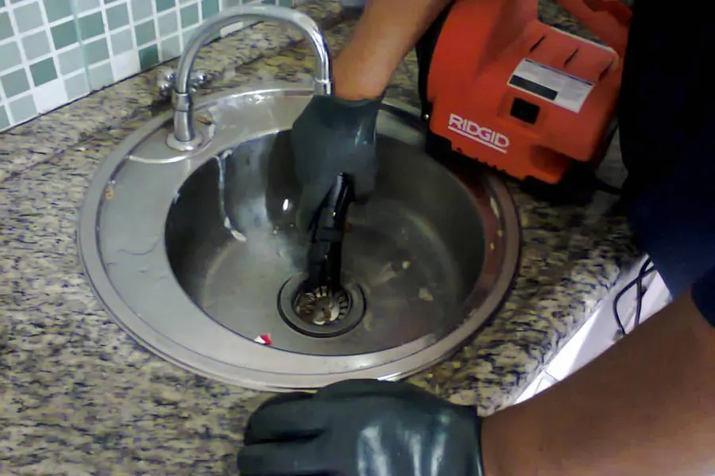
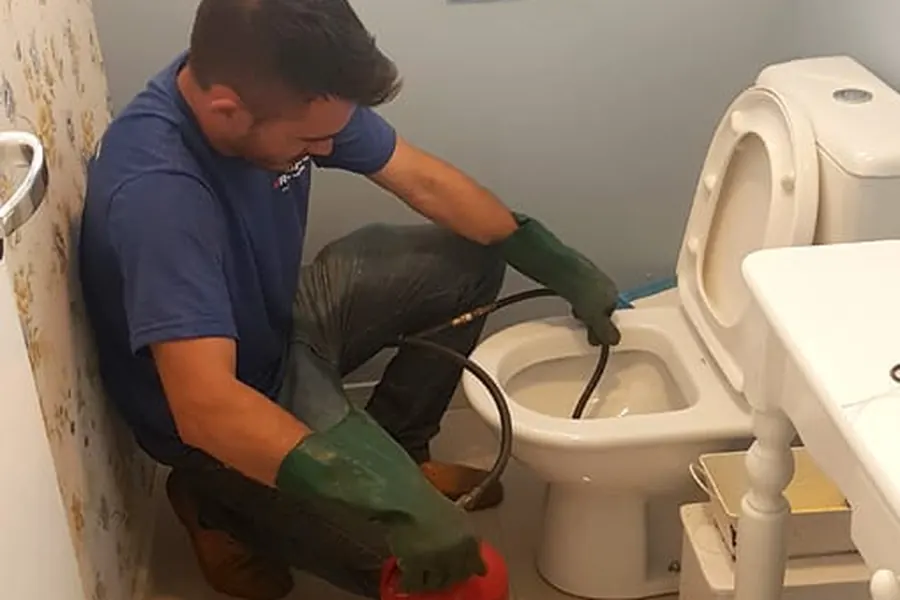
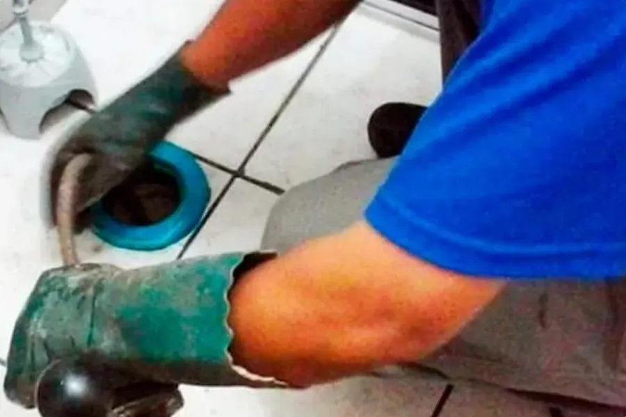
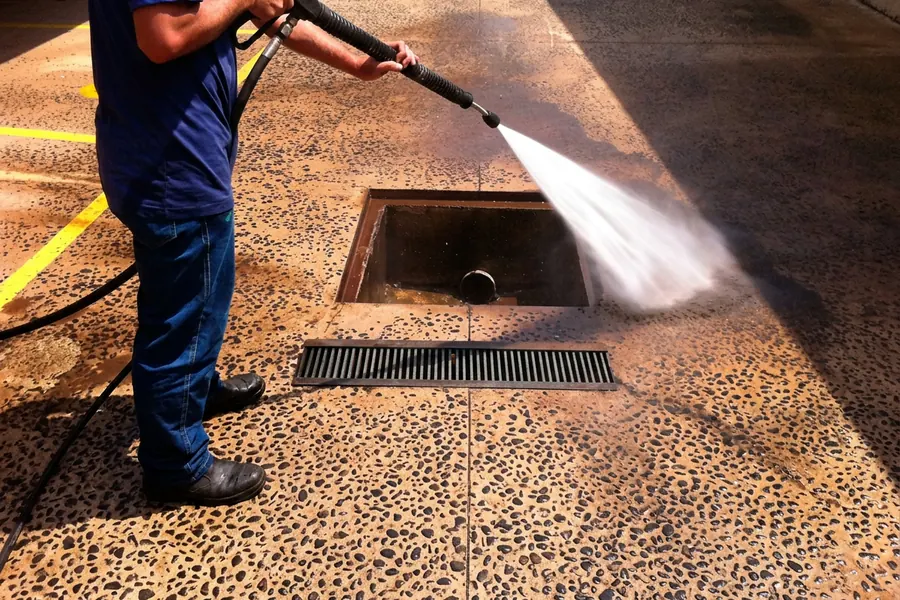
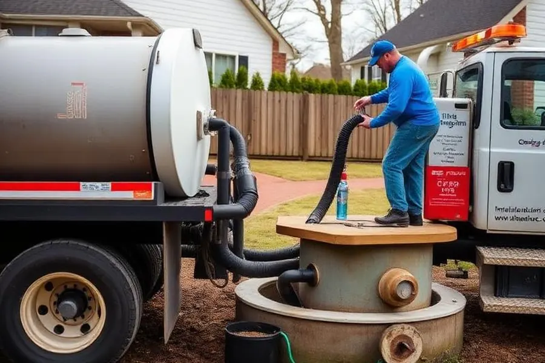
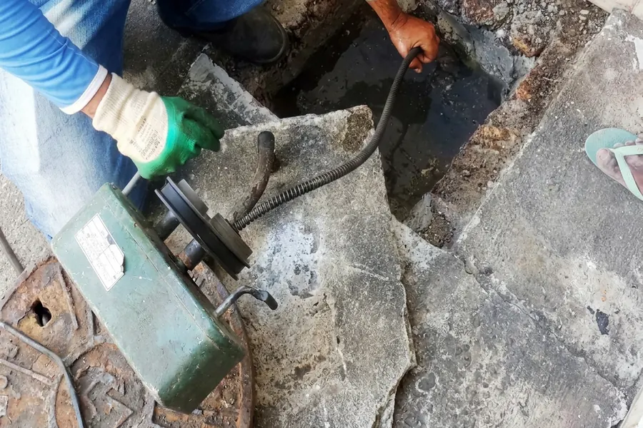

Desentupimento de pias
Pia da cozinha ou do banheiro com água parada ou escoando devagar.
- Pia de cozinha e de banheiro
- Tanque e saída da máquina de lavar
- Equipamento de alta pressão
Desentupidora 24 horas em Salvador
Atendimento 24h em Salvador e Região Metropolitana, com garantia de 3 meses. Pia, vaso, ralo, caixa de gordura, hidrojateamento e limpa fossa, para casa, empresa e condomínio. O orçamento é gratuito e passado antes de começar.
Nossos serviços
Equipamentos profissionais e equipe especializada para resolver qualquer entupimento, do ralo do banheiro à rede de esgoto da indústria.

Pia da cozinha ou do banheiro com água parada ou escoando devagar.

Descarga que não desce, água subindo ou vaso que entope toda semana.

Ralo do box devolvendo água, cheiro ruim ou água parada no quintal.

Pia da cozinha lenta, cheiro forte e gordura voltando pelo ralo.

Água em alta pressão para desobstruir a tubulação de ponta a ponta.

Fossa cheia, vaso descendo devagar e mau cheiro no quintal.

Atendimento especializado para empresas, indústrias, fábricas e condomínios, 24 horas.
Empresas, indústrias e condomínios
Empresa, indústria, fábrica e condomínio: rede de esgoto, caixa de gordura e fossa com hidrojateamento e caminhão sugador, 24 horas por dia, para o problema ser resolvido antes de parar a operação ou o prédio.
Pedir visita pelo WhatsAppPrefere falar agora? (71) 99628-9969
Atendimento 24 horas, com garantia de 3 meses em todos os serviços.
Onde atendemos
A equipe atende 24 horas em toda a área marcada no mapa: Salvador, Lauro de Freitas, Camaçari e Simões Filho. Ficou na dúvida se atendemos o seu endereço? Chama no WhatsApp que a gente confirma.
Dúvidas
Atendemos. O atendimento é 24 horas, todos os dias, inclusive feriados. Chama no WhatsApp ou liga para (71) 99628-9969.
Em Salvador, chegamos em até 30 minutos. Na Região Metropolitana depende da distância: manda o bairro no WhatsApp que a equipe confirma o horário na hora.
Não. A avaliação é gratuita e sem compromisso: o técnico localiza o entupimento e passa o valor antes de começar, sem surpresa depois.
Tem. Todos os serviços têm garantia de 3 meses.
Na maioria dos casos, não. A equipe desentope com equipamentos de alta pressão e hidrojateamento, pelo próprio ralo ou pela caixa de inspeção. Quebrar só entra em conversa quando o cano está rompido, e aí o técnico mostra o problema e combina com você antes.
Atendemos toda Salvador e a Região Metropolitana: Lauro de Freitas, Camaçari e Simões Filho. Se estiver em dúvida, chama no WhatsApp que a gente confirma na hora.
Atendemos. Rede de esgoto, hidrojateamento, caixa de gordura e limpa fossa para empresa, indústria, fábrica, comércio e condomínio, 24 horas. Chama no WhatsApp que a gente agenda a visita técnica.
Às vezes alivia um entupimento leve de gordura, mas é corrosiva, pode causar queimadura e, junto com água quente, danificar o cano. Se o entupimento volta, o problema costuma estar mais à frente na tubulação, e aí só o equipamento resolve.
A equipe está pronta para ir até você agora, 24 horas. Manda no WhatsApp onde entupiu e o bairro; uma foto ou um vídeo curto ajuda a chegar com o equipamento certo.